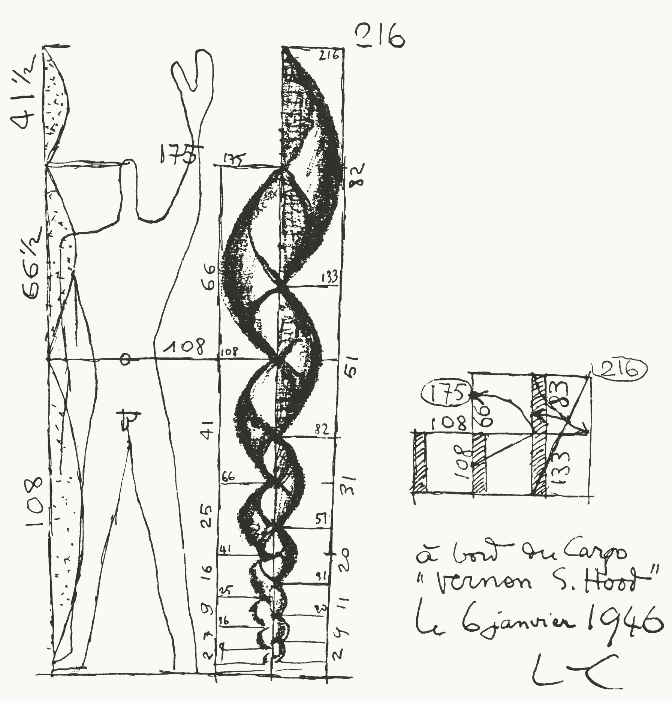
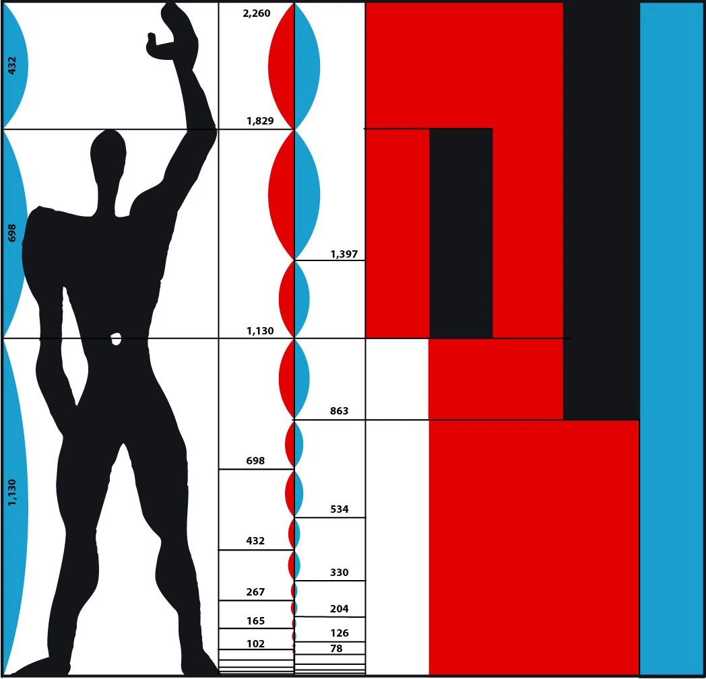
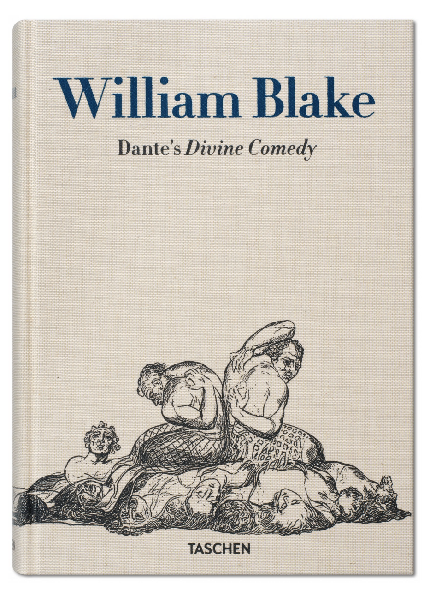
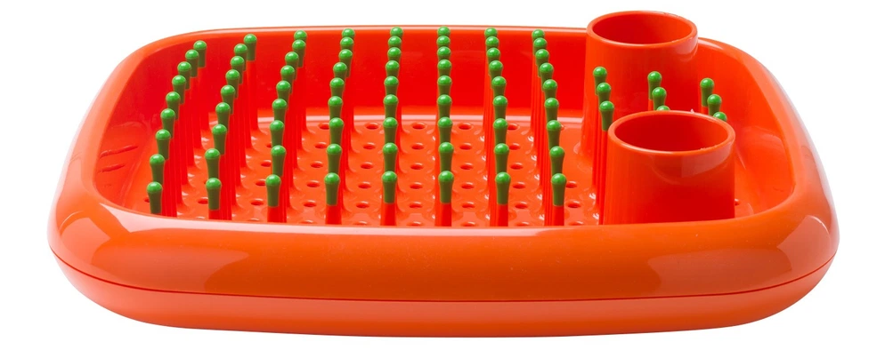

“Write freely and as rapidly as possible and throw the whole thing on paper. Never correct or rewrite until the whole thing is down. Rewrite in process is usually found to be an excuse for not going on. It also interferes with flow and rhythm which can only come from a kind of unconscious association with the material.” — John Steinbeck, writer. A letter to his friend Robert Wallsten, 1948
“Never send a letter or a memo on the day you write it. Read it aloud the next morning—and then edit it.” — David Ogilvy, founder of advertising agency Ogilvy & Mather. How to Write, 1982
“When it’s time to work again, always start by reading what you’ve written so far. The best way is to read it all every day from the start, correcting as you go along, then go on from where you stopped the day before. When it gets so long that you can’t do this every day read back two or three chapters each day; then each week read it all from the start. That’s how you make it all of one piece.” — Ernest Hemingway, writer. Esquire article, 1935
Draft, then polish.When you draft, it is still crucial to get right the key details. At the end of the day, both design and writing are ways to communicate. The utmost is to stay faithful to the meaning. For communication clarity is important, and there are rules to guarantee it. Unclear design, as well as unclear speech, can become dangerous. “Language is politics,” so is design.
Let’s begin with the sense of flow that is known to both designers and writers. At the beginning of a new project—be it a poster, website, or book—one need not be interrupted by polishing and petty work, trying to create something big all at once. For instance, a lot of writers recommend making no corrections until you are finishing, whether a poem or a chapter of a book.Yet there’s more to writing and design than this. Essentially, there are two phases of both writing and designing: draft and polish. After the whole thing is roughly assembled in a flash of inspiration, you must take a break, change the pace, and refine the details.

Modulor by Le Corbusier, 1948

Earlier I stated that, while drafting, one shouldn’t stop and get distracted by too many small details. Yet it’s also important to select certain details carefully from the beginning because the wrong choices can lead to a whole that’s dysfunctional and weak, which no amount of polishing can correct.
For a writer, these crucial details are usually certain words in key parts of the text. In design, these correspond to choosing the right typefaces. Good typefaces are generally thought to be the foundation of a good layout.
“The golden rule is not a rule of grammar or syntax. It concerns less the arrangement of words than the choice of them. Arrangement is of course important, but if the right words are used they generally have a happy knack of arranging themselves.” — Sir Ernest Gower, writer. Plain Words, 1948
“Even for a book on Paul Klee, for instance, it does not seem right to use an ordinary industrial sanserif. Its poverty of expression will humiliate the subtlety of this painter. And to set a philosopher or a classical poet in this ostensibly modern font is out of the question.” — Jan Tschichold, book designer. The Form of the Book, 1975

William Blake. Dante's Divine Comedy. Taschen, 2017
Araki by Araki, Taschen, 2014
“Select the specific and concrete word rather than general and abstract,” advices Handbook of Writing for the Mathematical Sciences by Nicholas J. Highamt. “Avoid wordiness: make every word count; omit words or phrases that add nothing to the meaning.” “Choose faces that suit the task as well as the subject,” says Robert Bringhurst , the author of an authoritative book on typography The Elements of Typographic Style.
Why are words and typefaces so important? Because the very idea of both writing and design is based on the existence of something underneath that needs to be exclaimed. There’s a meaning to be told, and the process of writing or designing is only a way to exclaim this meaning. That’s why wrong choice is fatal: it makes the creation contradict its own meaning from the very start, and thus beyond repair. Everything should help to convey the meaning in the first place. All the decoration is of secondary importance.
Concluding his rules for good writing in the essay Politics and the English Language, George Orwell states: “What is above all needed is to let the meaning choose the word, and not the other way about.” Compare it with the principle “Form follows function,” associated with 20th century modernist architecture and industrial design, when the shape of a building or object should be based upon its intended function or purpose.
Concluding his rules for good writing in the essay Politics and the English Language, George Orwell states: “What is above all needed is to let the meaning choose the word, and not the other way about.” Compare it with the principle “Form follows function,” associated with 20th century modernist architecture and industrial design, when the shape of a building or object should be based upon its intended function or purpose.


Dish Doctor, designed by Marc Newson, 1998